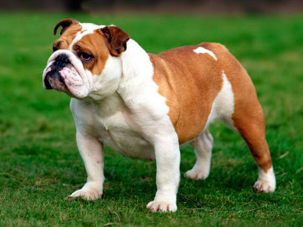
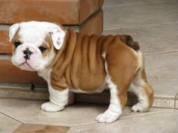

Деякі шанувальники у відгуках про породу англійський бульдог люблячи називають цих собак «чарівними виродками» — адже їх не дуже приваблива і комічна зовнішність з лишком компенсується ніжним і беззавітно люблячим серцем.
Цей кремезний здоровань із імпозантній зовнішністю зовсім не кровожерливий і агресивне істота, яким ми звикли сприймати його родича — безстрашного і недовірливого американського бульдога. Всі свої бійцівські якості ця порода втратила вже давно — відтоді, як перестала використовуватися за призначенням. Адже колись цей пес був улюбленцем публіки в змаганнях по цькуванню биків !
Незважаючи на свій малий зріст і компактний розмір, він вважався відмінним бійцем : адже крім знаменитої бульдожою хватки, він володів надзвичайною спритністю і умінням зробити те, що іншим собакам було не під силу : вкусити бика за його хворе місце — ніс.
З 1835 цькування на биків була заборонена, і англійські бульдоги з агресивних бійцівських собак поступово почали перетворюватися на аристократичних джентльменів і використовуватися в якості охоронців майна та компаньйонів.
Найбільш агресивних особин (а таких було чимало) вивозили з Англії, а решті собакам почали прищеплювати новий темперамент, намагаючись змінити їх твердий норов на «м’який і пухнастий». В результаті тривалої селекції ці грубі забіяк перетворилися на добродушних очаровашек, якими і залишаються донині.
Англійська бульдог — кремезний і «в міру вгодований» пес. У нього велика голова, широка кирпата мордочка з безліччю складок, коротенькі масивні кінцівки, широкі плечі, невеликі стоячі вушка, і короткий хвіст (до 8 см).
Сучасний англійський бульдог — сімейний пес, улюбленець дітей і дорослих. Він обожнює грати з малюками — адже він сам милий, незграбний і смішний дитина. Цей інтелігентний любитель комфорту прекрасно впишеться в стиль міської квартири і стане її гідною прикрасою.
Ці собачки — дуже віддані істоти, і якщо у когось з домочадців сталася неприємність, він обов’язково поспівчуває і підтримає. Англійська бульдог горою стоїть за свого господаря і насилу переносить довгу розлуку з ним. У нього дуже міцна психіка і спокійна вдача, але якщо його образити, він може згадати бойову вдачу своїх предків і відповісти кривдникові.
Якщо ваш вихованець зустріне на вулиці свого побратима і захоче з ним поспілкуватися, він не буде гавкати або задиратися, а як справжній джентльмен підійде і «зніме капелюха», навіть якщо це пес в кілька разів більше його самого. Мабуть, єдиний недолік цього бульдожки — здатність видавати не дуже приємний людському вуху хропіння, але хіба ця дрібниця може вплинути на ваше рішення завести це чудове і зворушливе створення !
Вибір цуценя англійського бульдога
Купуючи цуценя англійського бульдога потрібно чітко розуміти для якої мети ви його купуєте — від цього багато в чому залежить вибір статі тварини. Пси більш допитливі, уперті і задерикуваті. У них гірше розвинений інстинкт самозбереження. На дресирування кобеля доведеться затратити більше зусиль. Але все ж саме особини чоловічої статі є найбільш яскравими представниками породи. Вони більші, могутніше і ефектніше сук.
Якщо ви плануєте виставляти вашого англійського бульдога на конкурсах і виставках, зупиніть свій вибір на кобеля. Фізіологічні особливості «жіночого» організму припускають деякі складності в шоу- кар’єрі собаки. Тічка припадає саме на сезон виставок, під час вагітності і після пологів сука також знаходиться не в формі.
Вибирайте цуценя дуже ретельно і не керуйтеся емоціями у виборі : стандарти у виставкових собак цієї породи дуже жорсткі. Прямуючи в розплідник або до заводчику, візьміть з собою фахівця — кінолога, який допоможе вам зробити правильний вибір.
Якщо ви хочете зайнятися племінним розведенням англійського бульдога або просто завести хорошого друга і «сім’янина», краще взяти дівчинку. Вони ласковее, розсудливий. Суки англійського бульдога краще піддаються дресируванню і сильніше прив’язуються до господаря. Незручності у змісті дівчинки виникають під час тічки. Але проблему забруднених килимів і крісел можна вирішити за допомогою памперсів або трусиків, тим більше, що на такому здоровані вони прекрасно триматися.
Особливості утримання, догляд, здоров’я
На жаль, англійські бульдоги не відрізняються відмінним здоров’ям. У них можуть бути проблеми з серцем, легенями, а також шкірні захворювання та алергії. Граючи з твариною, не перевертайте його на спину, обережно беріть на руки — англійські бульдоги схильні до завороту шлунка. Властиві цій породі і хвороби очей: заворот вік, аденома третього століття. Якщо вчасно не звернутися до фахівця, можуть бути серйозні ускладнення, аж до сліпоти.
Прогулянки ці істоти віддають перевагу спокійні і неспішні. Будьте обережні в жарку і задушливу погоду — англійські бульдоги можуть легко отримати тепловий удар, також з цієї причини не залишайте песика в закритій машині. У спекотну погоду намагайтеся не гуляти з вихованцем, не дозволяйте йому бігати, не варто брати бульдога на пляж.
Не експериментуйте з раціоном англійського бульдога, так це може викликати алергічну реакцію. Шкідливі для всіх собак ковбаса, копчена, солодка, жирна їжа, випічка, консерви — для бульдога смертельні.
Догляд за шерстю англійського бульдога вимагає мінімум зусиль. Раз на тиждень вичісуйте шерсть вихованця спеціальною щіткою. Купати бульдога можна раз місяць або рідше. Використовуйте лише спеціальний шампунь для собак. До речі, для собак з білою шерстю існує спеціальний відбілюючий шампунь. Температура води для купання повинна бути близько 35 С. Після водних процедур гарненько витріть вихованця і залиште в теплій кімнаті далеко від протягів поки шерсть не просохне повністю.
Шкіра між пальцями лап іноді пріє, з’являється роздратування. Цю проблему може вирішити тальк для лап із зоомагазину, або звичайна дитяча присипка. Взимку щоб уникнути запалення і розтріскування подушечок лап за солі, якою посипають вулиці, водите собаку по снігу, одягайте спеціальні черевички або змащуйте лапи вазеліном або соняшниковою олією. Регулярно підстригайте вихованцеві кігті.
Особливості в’язки англійського бульдога
Висока ціна на цуценят в чому обумовлена важким процесом розмноження англійських бульдогів. Перші складнощі виникають вже при в’язці. Процес це досить складний, навіть досвідчені заводчики в шість рук допомагають спаровуються тваринам. Крім того, необхідно ще і «вгадати» готова чи сука — овуляція може настати в будь-який день тічки. Західні фахівці навчилися визначати термін за допомогою мазка, в Росії до цих пір роблять в’язку практично навмання.
За статистикою лише 10 % сук англійських бульдогів можуть самостійно народити цуценят. У 9 з 10 випадків доводиться робити кесарів розтин. Це пов’язано з особливостями фізіологічної будови : вигнута поперек матері не дозволяє цуценятам прийняти правильне положення в родових шляхах, а велика голова цуценят не проходить через вузький таз.
Проведення «кесарева» також пов’язане з труднощами. Враховуючи проблеми з серцем, властиві породі, з обережністю доводиться використовувати наркоз. Багато що залежить від професіоналізму ветеринара, тому не слід наймати лікаря «з вулиці». Оперувати собаку повинен досвідчений фахівець з хорошими рекомендаціями.
Дресирування англійського бульдога
Цей кирпатий пес славиться своїм інтелектом — він в змозі запам’ятати більше 300 «людських» слів. Але незважаючи на це, англійський бульдог трохи незграбний і повільний, тому повільно осягає ази собачого виховання.
При дресируванні вашого вихованця обзаведіться терпінням: він не відразу опанує всіма трюками, але рано чи пізно у нього все вийде — він же неймовірно впертий. До речі, в моменти небезпеки від його повільності не залишається і сліду і він діє швидко і рішуче.
Розплідники і клуби
На батьківщині англійський бульдог був визнаний наприкінці 19 століття, а в 1875 році був створений перший клуб любителів цих «перевихованих» джентльменів. У Росії англійські бульдоги з моменту їх появи в 1980 -х роках стали досить популярною породою і швидко стали з’являтися у російський собаководів.
В даний час існує декілька розплідників англійських бульдогів, що розташовуються в основному у великих містах Росії. Саме у них можна придбати справжніх породистих бульдожек. За багато років існування цієї породи в нашій країні, вони не втратили своєї популярності і любові собаководів.